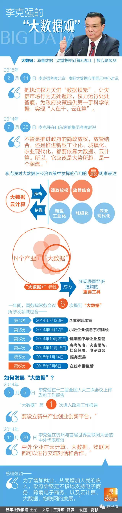

大数据时代

“大数据”，这个令不少互联网企业家激动的时髦词汇，在中国总理的字典里也占有重要的一席之地。
14日，李克强在贵州考察北京·贵阳大数据应用展示中心，详细了解贵阳利用执法记录仪和大数据云平台监督执法权力情况 他说，把执法权力关进“数据铁笼”，让失信市场行为无处遁形，权力运行处处留痕，为政府决策提供第一手科学依据，实现“人在干 云在算”这已经是进入新年以来，“大数据”第四次出现在总理活动的公开报道中 实际上，自去年3月第一次出现在政府工作报告中以来，“大数据”一词就被拥有经济学博士学位的李克强多次提及。
不管是助推简政放权 完善政府监管，还是调整经济结构 激发大众创新，李克强都不忘提醒要利用“大数据”。
从总理的言谈之中可以发现，“大数据”已和推动中国经济“爬坡过坎” 转型升级的宏大战略紧密相连。
图为14日，李克强在贵州考察北京·贵阳大数据应用展示中心。
大数据：新的价值源泉
关于什么是大数据技术，业界并无标准答案，但一般而言，可以将它理解为对海量数据的计算和加工，其核心是预测 例如，利用大数据，淘宝可以根据用户的个人喜好推荐商品 但它能做的并不仅仅如此。
牛津大学教授维克托·迈尔·舍恩伯格在其著作《大数据时代》中说：“大数据是人们获得新的认知 创造新的价值的源泉，还是改变市场 组织机构，以及政府与公民关系的方法 ”。
这番话似乎与李克强对“大数据”的思考相互印证。
互联网经济孕育出的“大数据”，能创造新的就业，培育新的增长点 在世界和中国经济双双步入“新常态”的形势下，这无疑是一项重要价值。
2014年3月5日，李克强在十二届全国人大二次会议上作政府工作报告时说，要设立新兴产业创业创新平台，在新一代移动通信 集成电路 大数据 先进制造 新能源 新材料等方面赶超先进，引领未来产业发展。
这是“大数据”首次进入政府工作报告，也表明其作为一种新兴产业，将得到国家层面的大力支持。
在这一点上，李克强的态度非常明确 2014年11月20日，李克强总理在杭州与首届世界互联网大会的中外代表座谈 据中国政府网报道，李克强对参会的外国互联网大佬说：“互联网的发展方向不仅有电子商务，还有云计算 大数据和物联网 中外企业在这些领域都可以进行交流对话和合作，相信你在中国会有更大市场 ”。
图为2014年11月20日，国务院总理李克强在杭州会见出席首届世界互联网大会的中外代表并同他们座谈。王晔摄
大数据+N
然而，从其根本性质来说，大数据不只是一个产业这么简单 它在社会的各个领域中都无所不在，可以与N个产业“相加”，这种“大数据+”的特性，也让它越来越受到李克强总理的重视。
1月4日，在开年的第一次考察中，李克强见证了首家互联网银行——深圳前海微众银行的第一笔贷款，并鼓励这家银行“在互联网金融领域闯出一条路子” 而微众银行最重要的特点之一，就是既无营业网点，也无营业柜台，更无需财产担保，而是通过人脸识别技术和大数据信用评级发放贷款。
国务院常务会议是观察中国经济政策走向的最佳窗口之一，也是总理释放信号的重要场合 而过去一年来，有6次国务院常务会议的议题都与大数据运用有关，涉及到多个产业和政务领域。
——2014年7月23日，审议通过《企业信息公示暂行条例(草案)》，推动构建公平竞争市场环境 其中要求建立部门间互联共享信息平台，运用大数据等手段提升监管水平。
——9月17日，部署进一步扶持小微企业发展，推动大众创业 万众创新，其中包括加大服务小微企业的信息系统建设，方便企业获得政策信息，运用大数据 云计算等技术提供更有效服务。
——10月29日，要求重点推进6大领域消费，其中强调加快健康医疗 企业监管等大数据应用。
——11月15日，提出在疾病防治 灾害预防 社会保障 电子政务等领域开展大数据应用示范。
1月4日，李克强在深圳前海微众银行考察。丁林摄
——2015年1月14日，部署加快发展服务贸易，以结构优化拓展发展空间，提出要创新模式，利用大数据 物联网等新技术打造服务贸易新型网络平台。
——2015年2月6日，确定运用互联网和大数据技术，加快建设投资项目在线审批监管平台，横向联通发展改革 城乡规划 国土资源 环境保护等部门，纵向贯通各级政府，推进网上受理办理监管“一条龙”服务，做到全透明可核查，让信息多跑路群众少跑腿。
甚至在去年12月25日的一次接见全国审计机关先进集体和先进工作者代表的活动上，李克强也强调，要创新审计方式方法，注重运用信息化 大数据等现代科技手段提高审计效率。
大数据，也是政府的事儿
从金融医疗贸易到扶持小微企业 电子政务监管审计，在李克强看来，利用大数据绝不仅仅是企业的事，也是政府部门的事。
2014年7月25日，在山东浪潮集团考察时，李克强把相关部门负责人叫到身边“现场办公”，要求他们要以云计算 大数据理念，与企业信息技术平台有机对接，建立统一综合信用信息平台，实现“大数据”共享。
他说：“不管是推进政府的简政放权，放管结合，还是推进新型工业化城镇化农业现代化，都要依靠大数据云计算所以，它应该是大势所趋，是一个潮流 ”。
这段被中央人民广播电台报道的讲话，可能是李克强关于大数据在经济政策中发挥的作用所作的最明晰表述。
这是2014年7月25日，李克强在济南浪潮集团考察。黄敬文摄
李克强“大数据经济”的背后逻辑，是中国经济悄然发生的“质变” 正如总理在世界互联网大会的那次座谈会上总结，去年以来，中国经济在增速放缓的情况下，中国就业率不降反增，重要原因是进行了政府的自身改革，推出商事制度改革等一系列简政放权举措，引发小微企业 个体户井喷式增长 而这些企业 商户中多数人的经营业务，都是依托于互联网展开。
他强调，为了增加就业 从而增加人民的收入，政府会坚定不移地支持电子商务 跨境电子商务，以及云计算 大数据 物联网的发展 “13亿中国人，八 九亿劳动力，这其中如果有越来越多的人依托新业态发展，就会培育出中国经济发展的新‘发动机’,也必将会对社会发展 人民进步造成深刻影响 ” 制图：高杉